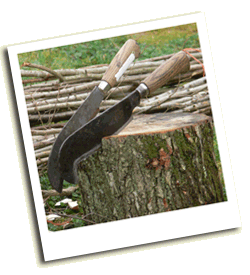

Landscape Therapy: All types of hedging plants sold and delivered Islandwide from our West Wight nursery. Advice on planting and maintaining hedges and woodland of all types.
01983 760011
07966 292334
The Annual IW Hedgelaying Competition
2026 Isle of Wight Hedgelaying Competition
The 29th Annual Hedgelaying Competition will be held on 28 February 2026 from 10am until 4pm at Atherfield Farm, by kind permission of Mrs Annie Henton.
Subscribe to our newsletter to be informed.
The Isle of Wight Hedgerow Group exists to encourage the planting of new hedges and the good management of existing ones, and to promote the art of hedgelaying. The group organises the annual Isle of Wight Hedgelaying Competition and is made up of individuals and organisations on the Isle of Wight who are interested in hedgerows.
The IW hedgelaying competition has been run by the IW Hedgerow Group for many years. A separate competition is run by the Wight Nature Fund.
Hedgelaying is the traditional way of managing hedges throughout much of England and Wales. It creates a thick barrier from untidy, gappy and straggling hedges. Stems are cut most of the way through so that they can be bent over without damaging them. This traditional country skill declined for much of the 20th century, and at one time looked as though it would die out. However a revival in the late 20th century came from an influx of amateur hedgelayers who now keep the craft alive as a hobby, as well as a small but growing number of professionals who find their services in demand when landowners realise the aesthetic and historic value of a real laid hedge.
Interested in advertising on this website? Contact IWHG - it helps raise funds for the competition.
Landscape Therapy: All types of hedging plants sold and delivered Islandwide from our West Wight nursery. Advice on planting and maintaining hedges and woodland of all types.
01983 760011
07966 292334